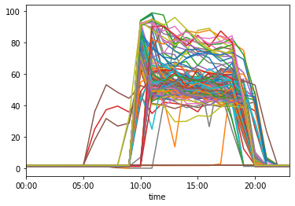
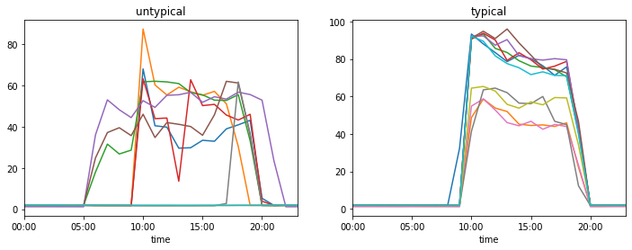

Anomaly Detection in Time Series Family via RNNs#
This code shows how Recurrent Neural Networks can be used to detect anomalies in intraday data, specifically power consumption for different days.
import numpy as np
import pandas as pd
import os
from matplotlib import pyplot as plt
import tensorflow.compat.v1 as tf
tf.disable_v2_behavior()
WARNING:tensorflow:From C:\Users\Maciej\Miniconda3\lib\site-packages\tensorflow_core\python\compat\v2_compat.py:65: disable_resource_variables (from tensorflow.python.ops.variable_scope) is deprecated and will be removed in a future version.
Instructions for updating:
non-resource variables are not supported in the long term
Data Exploration#
os.listdir()
d = pd.read_csv('datos_tienda.csv')
d=d.set_index(['date','time'])
d.head()
| Analizador Chiller Potencia Activa (KW) | Analizador General Potencia Activa (KW) | Temperatura Ambiente (ºC) CL01 Ventas | Temperatura Ambiente (ºC) CL02 Ventas | Temperatura Ambiente (ºC) CL03 Almacén | Temperatura Impulsión (ºC) CL01 Ventas | Temperatura Impulsión (ºC) CL02 Ventas | Temperatura Impulsión (ºC) CL03 Almacén | Temperatura Retorno (ºC) Agua CL01 Ventas | Temperatura Retorno (ºC) Agua CL02 Ventas | Temperatura Retorno (ºC) Agua CL03 Almacén | Temperatura (ºC) Entrada Agua General | Humedad Relativa (%) Ventas | ||
|---|---|---|---|---|---|---|---|---|---|---|---|---|---|---|
| date | time | |||||||||||||
| 01/08/2017 | 00:00 | 1.873695 | 5.940129 | 24.358182 | 25.788182 | 23.729091 | 24.091818 | 23.307273 | 23.688182 | 19.479091 | 19.881818 | 21.812727 | 19.362727 | 69.777273 |
| 01:00 | 1.833749 | 5.863945 | 24.301818 | 25.844545 | 23.600000 | 24.200000 | 23.403636 | 23.697273 | 19.808182 | 20.270909 | 22.045455 | 19.742727 | 69.522727 | |
| 02:00 | 1.856977 | 5.936164 | 24.285455 | 25.896364 | 23.600000 | 24.241818 | 23.496364 | 23.728182 | 20.038182 | 20.643636 | 22.251818 | 20.030909 | 69.169091 | |
| 03:00 | 1.852570 | 5.813366 | 24.296364 | 25.900000 | 23.600000 | 24.392727 | 23.548182 | 23.658182 | 20.249091 | 20.945455 | 22.305455 | 20.253636 | 68.919091 | |
| 04:00 | 1.864120 | 5.780504 | 24.300909 | 25.910909 | 23.600000 | 24.437273 | 23.600909 | 23.680909 | 20.459091 | 21.206364 | 22.415455 | 20.488182 | 68.459091 |
name= 'Analizador Chiller Potencia Activa (KW)'
for day in d.index.levels[0]:
d.loc[day][name].plot()

Recurrent Neural Network Model#
The model below is a standard Recurrent Neural Network, trained with a full pass (no truncated backpropagation) over each time series.
tf.reset_default_graph()
## NN params
state_size = 10
batch_size = 119
n_steps = 24
## prepare RNN components
X=tf.placeholder(tf.float32,[batch_size,n_steps],'input')
Y=tf.placeholder(tf.float32,[batch_size,n_steps],'output')
state0 = tf.zeros([batch_size,state_size],tf.float32)
with tf.variable_scope('rnn_cell'):
# updating hidden state
W_hh = tf.get_variable('W_hh',(state_size+1,state_size),tf.float32)
b_hh = tf.get_variable('b_hh',(state_size,),initializer=tf.constant_initializer(0.0))
# mapping hidden state to output
W_hy = tf.get_variable('W_hy',(state_size,),tf.float32)
b_hy = tf.get_variable('b_hy',(1,),initializer=tf.constant_initializer(0.0))
def forward_pass(cur_state,cur_input):
# one recursion step
with tf.variable_scope('rnn_cell',reuse=True):
W_hh = tf.get_variable('W_hh')
b_hh = tf.get_variable('b_hh')
W_hy = tf.get_variable('W_hy')
b_hy = tf.get_variable('b_hy')
h_next = tf.tanh(tf.tensordot(tf.concat([cur_state,tf.expand_dims(cur_input,-1)],axis=1),W_hh,axes=[[-1],[0]])+b_hh)
y = tf.tensordot(h_next,W_hy,axes=[[-1],[0]])+b_hy
return (h_next,y)
## build the model (recursion truncated, applied n_steps times)
state = state0
states = []
ys = []
X_slices = tf.unstack(X,axis=1)
for X_slice in X_slices:
state,y_slice = forward_pass(state,X_slice)
states.append(state)
ys.append(y_slice)
## build and optimize the loss function
Y_pred = tf.stack(ys,1)
loss = tf.losses.mean_squared_error(Y,Y_pred)
optimize = tf.train.AdamOptimizer().minimize(loss)
## training data - normalization per series
Y_train = np.array([d.loc[day][name].values for day in d.index.levels[0]])
X_train = Y_train.copy()
for i in range(Y_train.shape[0]):
Y_train[i] = (Y_train[i]-Y_train[i].mean())/Y_train[i].std()
X_train[i] = np.concatenate([[0],Y_train[i][:-1]])
## actual training
with tf.Session() as sess:
sess.run(tf.global_variables_initializer())
for i in range(1000):
loss_val,y_pred_val,_ = sess.run([loss,Y_pred,optimize],feed_dict={X:X_train,Y:Y_train})
if i%50==0:
print(loss_val)
1.2418616
0.5485334
0.37079644
0.30486536
0.27148882
0.25203776
0.24081959
0.23254925
0.22562897
0.21945302
0.21334115
0.20655124
0.19882861
0.19000076
0.18060978
0.17134002
0.16281833
0.15533376
0.14808142
0.14245528
Results#
Let’s look at 10 most common and most untypical cases. We see that untypical cases are due to
- different opening hours
- high daily fluctuations
losses=np.square(Y_train-y_pred_val).mean(-1)
fig,axs=plt.subplots(1,2,figsize=(12,4))
bad_idxs=np.argsort(losses)[-10:]
bad_days=d.index.levels[0][bad_idxs]
for day in bad_days:
d.loc[day,name].plot(ax=axs[0])
axs[0].set_title('untypical')
good_idxs=np.argsort(losses)[:10]
good_days=d.index.levels[0][good_idxs]
for day in good_days:
d.loc[day,name].plot(ax=axs[1])
axs[1].set_title('typical')
plt.show()
